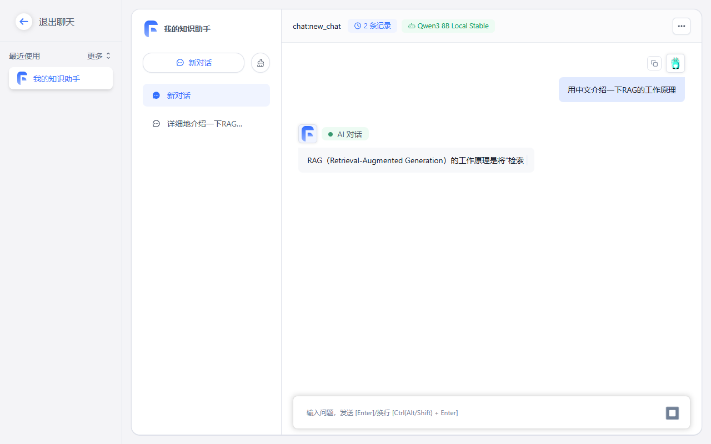
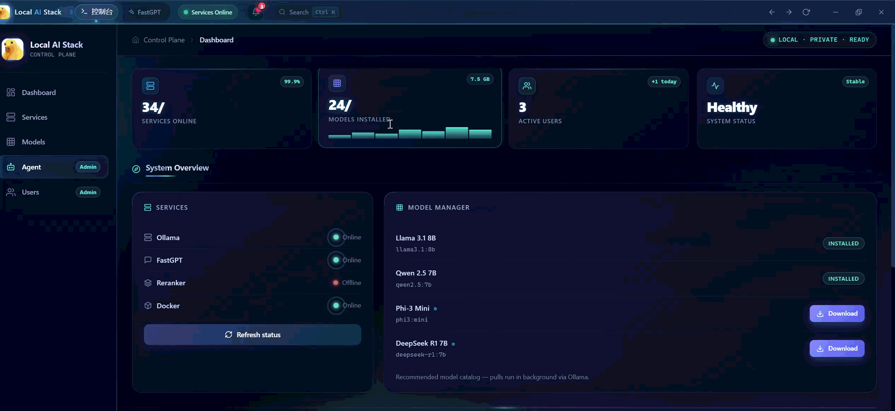
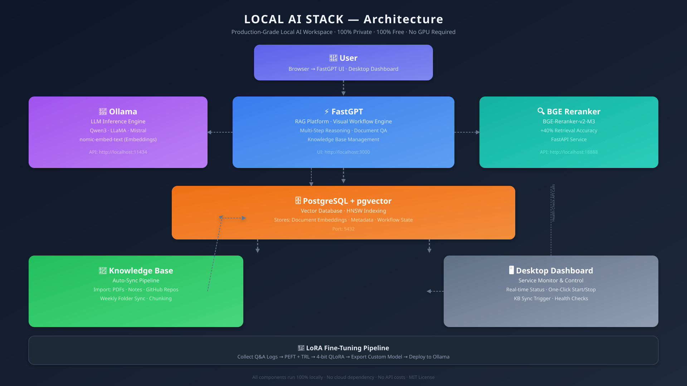

⌕
Ask your documents
Bring in notes, papers, repositories, and folders. Retrieve context locally and answer through a visual FastGPT workflow.
Run a useful AI stack on your own machine: private knowledge search, visual RAG workflows, local coding help, and optional LoRA fine-tuning—without usage metering or cloud lock-in.

Instead of another chat window, this project gives personal and small-team knowledge work an end-to-end local home.
Bring in notes, papers, repositories, and folders. Retrieve context locally and answer through a visual FastGPT workflow.
Use Ollama-backed models and the included OpenCode configuration when your codebase should remain on your machine.
Collect examples, prepare a dataset, and run the included QLoRA pipeline when you need a specialized local assistant.
Run the stack locally, manage access deliberately, and connect it to tools that keep your data on your machine.
A responsive control plane with viewer, operator, and administrator roles for service actions, user management, and knowledge-base sync.
Operators and administrators can pull an allowlisted Ollama catalog in the Dashboard while everyone can inspect installed models and job state.
Expose local model and reranking tools through stdio MCP, or let Dashboard administrators run step-limited read-only investigations without a terminal.
Import documents or synchronize selected folders.
FastGPT and pgvector find the relevant context.
The optional BGE service prioritizes stronger matches.
Ollama generates a response in your own workflow.
Service health, model downloads, activity logs, and access control stay visible in one responsive dashboard.

Each service has a clear role and a documented local endpoint, so you can begin with the defaults and evolve the stack as your needs grow.

The setup scripts create a local `.env` with random credentials, pull the recommended Ollama models, and start the services. To use the role-based Dashboard, bootstrap an administrator and run the local control plane after setup. Review the full guide before exposing any service beyond your machine.
# Linux / WSL — one command setup
git clone https://github.com/caizefan34/local-ai-stack.git
cd local-ai-stack
bash scripts/setup.sh
# Windows — run the guided installer
.\scripts\setup.ps1Use it, improve it, and share what you learn. A star helps other builders find a practical path to local AI.